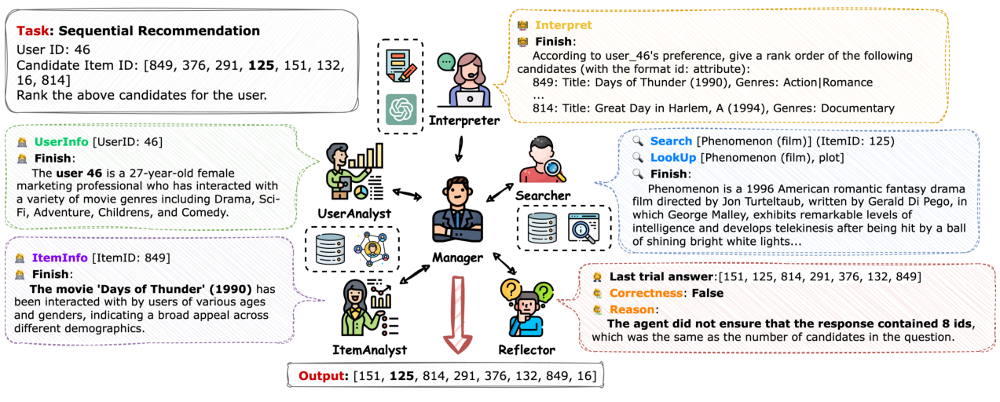

MACRec: a Multi-Agent Collaboration Framework for Recommendation (面向推荐的多智能体协作框架)
- 会议/期刊: SIGIR 2024（Demo/Resource Track，5 页短文）
- 作者与机构: Zhefan Wang, Yuanqing Yu, Wendi Zheng, Weizhi Ma, Min Zhang（清华大学 DCST / AIR）
- 推荐链路定位: 端到端（智能体直接产出评分 / 排序 / 解释，非传统召回-精排级联）
- 研究方向: 对话推荐与智能体仿真（主）/ 大语言模型推荐（次）
- 论文原文: https://arxiv.org/abs/2402.15235v3
- 开源代码: https://github.com/wzf2000/MACRec
TL;DR (1分钟核心速览)
针对"用 LLM 智能体做推荐"的两条既有路线（① RecAgent/Agent4Rec 等用户/物品仿真，无法真正接入推荐系统；② RecMind/InteRecAgent 等单智能体推荐，难以胜任多步复杂决策；RAH 虽有多种智能体却协作模式固定且未开源），本文提出 MACRec：以 Manager 为调度核心，配 Task Interpreter（对话→可执行任务）、User/Item Analyst（画像+交互检索工具）、Searcher（Wikipedia 检索摘要）、Reflector（对上一轮答案做反思并给出改进建议）共 6 类角色，按 Thought-Action-Observation 循环协作，全程免训练、零参数更新，并提供网页可视化。需强调：本文为框架/演示论文，未报告任何量化指标、数据划分或 Full-Ranking 评测，仅以 4 个任务的功能适配表与 1 个对话推荐案例（"Schindler's List" → "Amistad"）佐证可用性。
Background & Motivation (背景与核心矛盾)
- 主流范式: 一是 simulation-oriented，把 LLM 智能体当作虚拟用户（RecAgent、Agent4Rec）或用户-物品双端（AgentCF）来增强评估与偏好理解；二是 recommender-oriented，用单个带 planning/memory 组件的智能体直接完成推荐（RecMind、InteRecAgent）。
- 前人局限: 仿真路线的智能体不参与推荐系统本身，只做离线代餐；单智能体路线面对序列推荐、多候选排序、长对话意图解析等多阶段决策任务时，一个 prompt 难以同时完成意图解析、偏好推理、格式校验与纠错。
- 核心洞察 (Key Insight): 人类推荐工作流本就是"任务解析 → 查资料 → 画像分析 → 出结果 → 复盘纠错"的分工协作，而现有多智能体推荐工作（RAH）智能体类型少、协作拓扑写死，无法按任务裁剪角色，且无开源实现阻碍复现。
- 本文切入点: 把推荐任务重构成 可配置角色 + 可插拔工具 + 反思回环 的多智能体流水线，用"角色选择表"适配不同场景（表 2），并开源框架与 Web UI。
Method (核心方法设计)
1. 整体框架 (Overall Architecture)
框架以任务为中心、Manager 为唯一控制中枢。输入先经 Task Interpreter 压缩长对话历史为一句可执行任务描述；Manager 随后在 Thought（判断信息是否充分）/ Action（直接作答或调用某个智能体）/ Observation（接收被调用者回复）三态间交替循环；被调用的 Analyst 与 Searcher 各自挂载工具（info database、interaction retriever、搜索引擎+段落摘要），返回结构化观察；若 Manager 进入第 2 次及以上尝试，Reflector 介入评判上一轮答案并给出自然语言改进建议（如"未考虑用户历史中少数高评分物品"或"答案格式未遵循任务要求"），Manager 据此重作答；若 Reflector 判定"已无改进空间"则提前收敛。整套流程无损失函数、无梯度更新，纯靠 prompt 编排; 推理成本为 \(O(n_{\text{agent}} \times T_{\text{round}})\) 次 LLM 调用。
flowchart TD
A["对话历史 / 任务输入"] --> B["Task Interpreter: 历史压缩为可执行任务"]
B --> C["Manager: Thought → Action → Observation 循环"]
C -->|"调用"| D["User/Item Analyst: 画像库 + 交互检索"]
C -->|"调用"| E["Searcher: 检索 + 段落摘要"]
D --> C
E --> C
C --> F{"第 2 轮及以上？"}
F -->|"是"| G["Reflector: 评判 + 改进建议"]
G --> C
F -->|"否/已无改进空间"| H["最终答案: 评分 / 排序 / 解释"]
2. 关键设计拆解 (Key Designs)
- ReAct 式 Manager 调度器（把推荐拆成可中断的多步决策）：痛点是单次前向无法同时"想清楚再回答"，也容易漏掉候选 ID。形式化地，第 \(t\)轮有\((\tau_t, a_t) = \mathcal{M}(\tilde{q}, \mathcal{O}_{<t})\)，其中\(\mathcal{O}_{<t}\)为累计观察，动作空间为\(a_t \in \{\textsc{Answer}, \textsc{Call}(u)\}\)。Thought 显式写出"当前信息是否充分"，使模型把隐性推理外化，从而可被后续 Reflector 检视——这是纠错得以生效的前提。
- Reflector 的固定点式反思回环（免训练的自纠正）：痛点是一次生成的结果没人复核，格式与遗漏错误直接流出。设计为 \(r_t = \mathcal{R}(\tilde{q}, a_{t-1})\)，若\(r_t = \varnothing\)则终止；否则\(a_t = \mathcal{M}(\tilde{q}, \mathcal{O}_{<t}, r_t)\)。直观上它把"评估"从生成器中剥离成一个独立角色，避免模型自评时的一致性偏差（自己写的答案自己看不出错）。
- Task Interpreter 的角色专用化（长对话 → 单句任务）：对话推荐中用户话语往往不含明确指令，故取历史末 \(k\)轮\(H_{[n-k:n]}\)经\(\tilde{q} = \mathcal{I}(H_{[n-k:n]})\) 得到任务描述，必要时调摘要工具。截断 + 摘要把上下文长度从"整段会话"降到常数级，是控制 token 成本的关键工程技巧。
- 训练目标、工具与推理开销: 无 \(\mathcal{L}\)，无负采样，纯 zero-shot 提示编排；"知识注入"完全依赖 Analyst 的 info database / interaction retriever 与 Searcher 的外部检索，因此新增场景只需改配置文件（表 2 的角色勾选）而非重训。
Experimental Setup & Evaluation Protocol (实验设置与评估协议)
- 数据集与预处理: 本文未使用任何公开基准数据集，无
5-core过滤、无用户/物品统计表，也未给出数据规模与稀疏度。所用数据仅为 MovieLens 类电影数据的少量样本，用于构造案例与 UI 演示。 - 数据划分与防穿越 (Splitting Strategy): 未声明任何划分方式（无
Leave-One-Out、无比例划分、无全局时间戳切分）；Analyst 的 interaction retriever 声称"只取当前时刻之前的历史"，但未见形式化的时间穿越校验。 - 排名评测协议 (Ranking Protocol): 未定义任何评测协议，既无无偏
Full-Ranking，也无Sampled Ranking，更无 Recall@K / NDCG@K / RMSE 等指标；序列推荐的"候选排序"仅作定性展示。 - 对比基线与超参设置: 唯一"对比"是表 1 的功能维度对比（是否为仿真/推荐器、单类型/多类型智能体、是否覆盖多场景、是否开源），非性能对比；未报告 Embedding 维度、LLM 基座型号、温度、max_tokens 等复现关键超参，也无显著性检验。
表 1：与前作的功能维度对比（原文 Table 1 改写）
| 工作 | 目标 | 单一类型智能体 | 多类型智能体 | 多推荐场景 | 开源 |
|---|---|---|---|---|---|
| RecAgent / Agent4Rec | 用户仿真 | ✓ | ✗ | ✗ | ✗ |
| AgentCF | 用户-物品联合仿真 | ✗ | ✓（仅 2 类） | ✗ | ✗ |
| RAH | 推荐器 | ✗ | ✓（固定协作） | ✗ | ✗ |
| RecMind / InteRecAgent | 推荐器 | ✓ | ✗ | ✗ | ✗ |
| MACRec（本文） | 推荐器 | ✗ | ✓ | ✓（4 任务） | ✓ |
表 2：四个场景的角色配置（原文 Table 2 改写，✓必选 / ○可选 / —不需要）
| 任务 | Task Interpreter | User Analyst | Item Analyst | Searcher | Reflector |
|---|---|---|---|---|---|
| 评分预测 (RP) | — | ✓ | ✓ | ○ | ○ |
| 序列推荐 (SR) | — | ✓ | ○ | ○ | ✓ |
| 解释生成 (EG) | — | ✓ | ✓ | ✓ | ○ |
| 对话推荐 (CR) | ✓ | ✓ | ○ | ○ | ○ |
Key Experimental Results (实验关键数据)
1. 主实验对比 (Main Results)
原文不存在主实验数值表。可提取的定量事实为结构性的：6 类角色（Manager、Reflector、User Analyst、Item Analyst、Searcher、Task Interpreter）、4 个推荐任务（RP/SR/EG/CR）、1 套开源代码 + 1 个 Web UI；表 1 中 MACRec 是唯一同时满足"多类型智能体 + 多场景 + 开源"三项的行。
2. 组件必要性（原文未做消融，此处按论述归因，非数值结果）
| 移除组件 | 论文声称的后果 | 证据类型 |
|---|---|---|
| w/o Reflector | SR 的排序答案易出现格式错误、漏候选 ID、忽略长期兴趣 | 叙述性（§4.2） |
| w/o Task Interpreter | CR 中含糊对话无法转为明确任务，Manager 无从下手 | 抽样式（图 2 案例） |
| w/o Searcher | EG 无法获取数据集外信息（如导演） | 叙述性（§4.3） |
| w/o Analyst 工具 | 仅剩参数化记忆，画像与交互史不可追溯 | 叙述性（§3.2.3） |
3. 关键实验发现 (Key Findings)
- 场景适配靠配置而非重训：表 2 显示 4 个任务的角色组合互不相同（RP 需双 Analyst、SR 强依赖 Reflector、CR 强依赖 Interpreter），说明"按任务裁剪角色"确有实际必要性，但论文未量化每种裁剪带来的收益差异。
- 唯一端到端案例只有 1 条链路：图 2 中用户提到 "Schindler's List" → Interpreter 改写 → Manager 两次调用 Searcher → 输出 "Amistad"，全程 3 个智能体、2 轮检索，属单例演示，无法推断成功率或稳定性。
- 能力覆盖度优于既有工作但缺性能证据：表 1 的四项 +/− 组合是本文最强的"结果"，恰好也暴露其定位——贡献在工程可复现性（开源框架 + UI），而非推荐效果提升。
Highlights & Limitations (亮点、对比与审稿批判)
- 与代表作对比: vs RecAgent/Agent4Rec：后者是仿真器、不接入真实推荐流程，MACRec 直接输出推荐结果；vs RecMind/InteRecAgent：单智能体靠 planning+memory 硬扛全部环节，MACRec 用角色分解把"生成"与"评估"解耦；vs RAH：同属多类型智能体，但 RAH 协作拓扑固定、无代码，MACRec 以表 2 式配置支持可变工作流并开源。
- 可迁移亮点: ①"Reflector 作为独立评估角色 + 无改进即提前终止"可直接嵌进现有 LLM 重排/解释生成流水线，作为廉价的自检模块；②Task Interpreter 的"末 k 轮截断 + 摘要"是对话推荐里控制上下文成本的低成本范式。
- 审稿级局限批判: ①评估近乎空白——无数据集、无划分、无指标、无消融、无显著性检验，作为 SIGIR 正式论文仅能以 Demo 定位成立，任何"效果更好"的主张均不受证据支撑；②成本与稳定性未讨论——多智能体多轮调用使 token 与时延成本成倍上升，Reflector 终止条件未给出上界，存在反思死循环风险；③工具依赖 Wikipedia 与结构化 info database，跨域迁移需重建工具层，泛化性被高估。
Rating (四维评分)
- 方法创新性 (Novelty): ⭐⭐⭐ （角色分工 + 反思回环的组合在 Agent 工程层面新颖，但每个组件均可追溯到 ReAct/Reflexion 类通用范式，缺少理论或机制层面的新算子）
- 评估协议与实验扎实度 (Protocol & Experiments): ⭐ （无数据集、无划分、无 Full-Ranking/采样排行、无消融与显著性检验，仅 1 条案例与 2 张功能表）
- 写作与数学规范度 (Clarity & Rigor): ⭐⭐⭐ （框架叙述与图示清晰、表 1/表 2 概括力强，但全文无形式化定义、无复杂度与成本分析）
- 工业落地与复现价值 (Industrial & Practical Value): ⭐⭐⭐⭐ （代码与 Web UI 完整开源、配置式装配易上手，是多智能体推荐工作里少见的可跑基线，但线上部署需另行解决时延与费用）